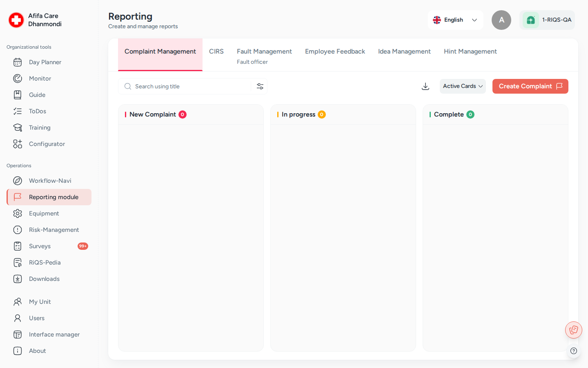

Incident Reports¶
In one sentence: One place where staff report incidents, complaints, ideas, feedback, device faults and hints, and where officers follow each report up until it is closed. Menu: Reporting module (the page is titled Reporting) · Status: Live

Reporting module: one tab per report type; each report is a card that moves from left to right. Screens show test data.
What it is¶
Every organisation needs a way to hear about things that went wrong, things that could go better, and things that are broken. Incident Reports gives everyone in the unit one simple place to say "something happened". It also gives a named person, the officer, one place to deal with it.
Think of it as six pin boards hanging side by side. Each board is for one kind of report. A new report is pinned on the left. The officer moves it to the right as the work gets done. When it reaches the last column, it is finished.
Each board can be set up for the whole organisation or for a single unit. Some reports can be sent anonymously, so staff can speak up without fear. Officers turn a report into real actions: a To-Do for a colleague, a process guide to follow, or a linked risk.
This page explains what all six boards have in common. Each report type has its own page with the details and its own "Who can do what" table.
The six report types at a glance¶
| Report type (tab) | What it is for | Columns on the board | Anonymous? | Who handles it | Can be set up at | Details |
|---|---|---|---|---|---|---|
| CIRS | Critical incidents and near misses (e.g. a wrong medicine almost given) | To Be Approved → To Do → In Progress → Done | Always | CIRS Officer | Organisation or unit | CIRS |
| Complaint Management | Complaints from patients, customers, suppliers or partners | New Complaint → In Progress → Complete | Optional | Complaint Officer | Organisation or unit | Complaints |
| Idea Management | Suggestions to improve how work is done | New Idea → In Process → Implemented | Optional | Ideas Officer | Organisation or unit | Ideas |
| Employee Feedback | Personal concerns and wishes of staff (e.g. workload, conflicts) | Assignment → In Progress → Completed | Optional | Feedback Officer | Organisation or unit | Employee Feedback |
| Fault Management | Broken or faulty devices and equipment | New Fault → Fault Clearance → Completed | No | Fault Officer, plus the people responsible for the device | Organisation or unit | Faults |
| Hint Management | Whistleblowing: suspected fraud, harassment, safety or compliance breaches | New Hint → In Process → Implemented | Optional | Hint Officer (and, if chosen, an external reporting office) | Organisation only | Hints |
Key terms¶
| Term | Meaning |
|---|---|
| Report (card) | One reported item. On the board it is a card with a number, e.g. #12. |
| Board (tab) | The list of reports of one type, shown in columns. Each report type has its own tab. |
| Officer | The person (or people) appointed to handle one report type, e.g. the CIRS Officer. A function role given on top of a normal role. See Roles & permissions. |
| Reporting level | How a report type is organised for a unit: Organizational, Unit with insight or Unit without insight. Older documents call these Option 1, 2 and 3. |
| Organizational | One officer team for the whole organisation. They see and handle the reports of all units. |
| Unit with insight | Each unit has its own officer. The organisation's administrators can still look in. |
| Unit without insight | Each unit has its own officer. The organisation's administrators are mostly kept out. |
| Active / inactive | An inactive report is "switched off": hidden from the normal board and read-only, but kept. It can be reactivated. |
| Officer-only visibility | A report that only the officers (and the person who wrote it) can see. |
| External reporting office | An outside contact (e.g. an ombudsperson) who receives CIRS or hint reports by email and opens them through a link. |
| CIRRNET | An external network where organisations share anonymous incident reports so that others can learn from them. CIRS reports can be forwarded to it. |
| Malfunction group | A category for fault reports (e.g. "IT", "Medical devices"). Older documents call it a "fault group". |
Who uses it¶
| Role | What they typically do here |
|---|---|
| RiQS Administrator | Supports clients, appoints officers when asked, and is the only role that can delete reports in audit-safe mode (for most report types also outside it). Does not write reports. |
| Group Administrator | Switches report types on, chooses the reporting level for units, appoints organisation-level officers. |
| Administrator | Same as Group Administrator for the own organisation. Often processes reports when a type runs at organisation level. |
| Power User | Appoints officers for the own unit and, at unit level, often processes reports too. |
| Management | Writes reports, reads the unit's reports and downloads overviews. |
| Professional | Writes reports and follows the own reports. |
| Officers (CIRS, Complaint, Ideas, Feedback, Fault, Hint) | Review new reports, decide what to do, assign To-Dos and guides, and close the report. |
How it works¶
All six report types follow the same life cycle:
Reported → Reviewed by the officer → Actions taken → Closed
- Report. Anyone allowed to report opens the right tab, clicks the create button and fills in a short form. The report appears in the first column.
- Officer review. The officer sees a New badge on the card (and, for some types, gets an email). They open it, read it and decide what is needed.
- Actions / measures. The officer drags the card to the middle column and acts:
- Create To Do gives a task to a colleague. It shows up in that person's Workflow-Navi in the Cockpit.
- Attach Guide attaches a process guide that someone must follow.
- The officer records what was done or planned in the report's fields (e.g. Measures, Decision, Remarks).
- Close. When the work is done, the officer drags the card to the last column. A closed report can go back to the middle column if more work is needed.
Cards move step by step. A card can move one column forward, or from the last column back to the middle one. It cannot skip a column; the app shows Invalid move. The CIRS board has one extra step at the start: To Be Approved. There the officer checks a report before the rest of the unit can see it.
At any time, a person with the right can Deactivate a report, for example a duplicate or a report sent by mistake. This also deactivates the To-Dos and guides attached to it.
How to …¶
How to create a report¶
Who can do this: Everyone except the RiQS Administrator. When Employee Feedback or Fault Management runs at Unit without insight level, Group Administrators and Administrators cannot create those reports. 1. In the left menu, click Reporting module. The board opens on Complaint Management. 2. Click the tab of the report type you need, e.g. CIRS. 3. Click the create button above the board. 4. Fill in the form. Title and Description are always required. The other fields depend on the type (see the type pages). 5. If the type allows it and you want to stay anonymous, switch on Send anonymously. 6. Optionally attach files. 7. Click Report. Click Cancel to close the form without saving anything.
Result: The card appears in the first column of the board.
How to find a report¶
Who can do this: Everyone who can see the board. 1. Open the tab of the report type. 2. Type a word in the search box. The board shows only matching reports. Clear the box to see all again. 3. Click Filters to filter, e.g. by status, date, urgency or keyword. Click Apply, or Cancel to close without changing the board. 4. To see switched-off reports, change the view from active to inactive cards.
Result: The board shows only the matching reports.
How to process a report¶
Who can do this: The officer of that report type, and the other roles named in the type's "Who can do what" table. 1. Click the card number (e.g. #12) to open the report. 2. Fill in or change the officer fields, then save. 3. Drag the card to the next column. 4. To add work, open the card's More options menu (three dots) and choose Create To Do or Attach Guide. These are only offered while the report is active and not yet closed, and only if the unit has the To-Do or Process Guide module.
Result: The card moves. To-Dos and guides appear on the report and in the assignees' Workflow-Navi.
How to deactivate or reactivate a report¶
Who can do this: See the type pages (usually the officer and the administrators of that level). 1. Open the report. 2. Open More options and click Deactivate. In the inactive view, click Activate instead.
Result: The report moves to the inactive cards and becomes read-only. Its To-Dos and guides are deactivated too.
How to download an overview¶
Who can do this: See the type pages (usually everyone except Professionals). 1. Open the tab of the report type. 2. Click Download in the toolbar, or Download report in a card's More options menu.
Result: An Excel overview is downloaded. Anonymous reports show "Anonymous" instead of a name.
How to appoint an officer¶
Who can do this: At Organizational level: RiQS Administrator, Group Administrator, Administrator. At unit level: RiQS Administrator and Power User. The exact rules differ per type; see the type pages. 1. Open Reporting module and the tab of the report type. 2. Click the officer button in the board's toolbar. 3. In Select user, pick one or more people. You can pick Power Users, Management and Professionals; for CIRS, Complaint and Ideas Officers also Administrators. (Hint Officers: Administrators, Power Users and Management.) 4. Click Appoint.
Result: The chosen people become officers for this report type. The tab shows that you are the officer when you open it.
How to set up reporting for a unit¶
Who can do this: RiQS Administrator, Group Administrator, Administrator. For CIRS at Unit without insight level, the RiQS Administrator and the Power User choose the level and the visibility (not the Group Administrator or Administrator). For Idea Management at Unit without insight level, the Power User can also choose it. 1. Open the unit's settings (see Organisation & units). 2. In the Reporting Module section, choose for each report type: Organizational, Unit with insight or Unit without insight. Hint Management can only be Organizational. 3. For CIRS, choose Visibility of CIRS Reports: All or Management & CIRS officers. 4. For Fault Management, choose Report visibility for fault management in the same way. 5. Save.
Result: The unit's board shows the tabs with the chosen rules. Malfunction groups and CIRRNET are set up in the unit's reporting configuration (see Faults and CIRS).
Rules to know¶
- Anonymity.
- CIRS reports are always anonymous. There is no switch, and the reporter's name is never shown.
- Complaint, Idea, Employee Feedback and Hint reports have a Send anonymously switch. It is off by default.
- Fault reports are never anonymous.
- When a report is anonymous, the name is hidden on the card, in the details and in the Excel download.
- Who sees a report. The person who wrote a report can always see it. So can the officers, and anyone given a To-Do or guide on it. Beyond that, each type has its own rules (see the type pages). Some reports can be limited to officers only:
- Complaints: the Complaint only visible to officer switch on the report.
- Employee Feedback: the Feedback only visible to officer switch on the report.
- Faults: the Send fault only to officer switch on the report, plus the unit setting.
- CIRS: the unit setting Visibility of CIRS Reports.
- Unit without insight. Group Administrators and Administrators do not see the CIRS, idea, employee feedback and fault reports of such a unit. For complaints they see the unit's complaints that are not officer-only.
- Notifications (email).
- New CIRS or hint report: the officers get an email.
- New hint or employee feedback: the reporter gets a confirmation email.
- Idea requalified as employee feedback: the reporter gets an email.
- Hint for the external reporting office: the office gets an email when the hint is created, or later when the officer sends it on.
- CIRS report with an external reporting office: the office gets an email when the report is approved (moved from To Be Approved to To Do).
- To-Dos created from a report follow the normal To-Do notifications.
- New-report badge. New cards show a New badge, and each tab shows how many new reports are waiting.
- Inactive reports are read-only. You cannot edit, move, copy or add To-Dos to them. Reactivate first.
- Deleting. In audit-safe mode, only the RiQS Administrator can delete a report. Outside audit-safe mode, complaints and ideas can also be deleted by some other roles (see Complaints and Ideas). For all other types only the RiQS Administrator can delete. Everyone else deactivates instead.
- The RiQS Administrator does not write reports. The create button is not offered to that role.
- Moving between boards. Only ideas can move to another board: the officer can requalify an idea as Employee Feedback.
- Attachments open in a preview window inside RIQS. They do not open a new tab and have no download button on the card.
Who can do what¶
The exact rights depend on the report type and on the reporting level. This table gives the general picture only. Check the type page for the exact rules.
Legend: ✅ allowed · ❌ not allowed · text = condition · Org = Organizational · Unit+ = Unit with insight · Unit− = Unit without insight · "Mostly" = true for most types, see type pages.
| Action | RiQS Administrator | Group Administrator | Administrator | Power User | Management | Professional | Officer of the type |
|---|---|---|---|---|---|---|---|
| Switch a report type on and choose the reporting level | ✅ | Mostly ✅ | Mostly ✅ | CIRS, Ideas: Unit− | ❌ | ❌ | ❌ |
| Appoint officers | ✅ | Mostly Org | Mostly Org | Mostly Unit+, Unit− | ❌ | ❌ | Mostly ❌ |
| Create a report | ❌ | Mostly ✅ | Mostly ✅ | ✅ | ✅ | ✅ | ✅ |
| See the own reports | ✅ | ✅ | ✅ | ✅ | ✅ | ✅ | ✅ |
| Process reports (edit, move, To-Do, guide) | ❌ | Mostly Org | Mostly Org | Mostly ✅ | Some types, see type pages | Faults: if responsible for the device | ✅ |
| Deactivate / reactivate | ❌ | Mostly Org | Mostly Org | Some types, see type pages | Some types, see type pages | Faults: if responsible for the device | ✅ |
| Download an overview | Mostly ✅ | Mostly Org, Unit+ | Mostly Org, Unit+ | Mostly ✅ | Mostly ✅ | Faults: if responsible for the device | ✅ |
| Delete a report (normal version) | ✅ | Complaints, ideas: Org | Complaints, ideas: Org | Complaints: Unit+, Unit− | ❌ | ❌ | Complaints; ideas: Org |
| Delete a report (audit-safe mode) | ✅ | ❌ | ❌ | ❌ | ❌ | ❌ | ❌ |
Connected modules¶
- Open Items: Create To Do on a report creates a To-Do there.
- Process Guide: Attach Guide assigns a process guide from the report.
- Cockpit: To-Dos and guides from reports appear in the assignee's Workflow-Navi under the report's title. They leave it when done, or when the report is deactivated.
- Risk Management: risks linked to a CIRS report are listed on the report.
- Equipment: fault reports point to a device. The people responsible for the device can handle its faults.
- Organisation & units: reporting levels, visibility settings, malfunction groups, CIRRNET and external reporting offices are set up there.
- RiQS-Pedia and Interactive documents: documents and forms can be attached to reports.
Open questions¶
- Rights sheets vs feature list. For every report type, the Roles & Rights sheets (used on these pages) and the feature list disagree in some places. The details are listed in the Open questions of each type page.
- Officer emails. Officers get an email for new CIRS and hint reports only. Is it intended that officers of complaints, ideas, feedback and faults get no email, only the New badge?
Last reviewed: 2026-10-26